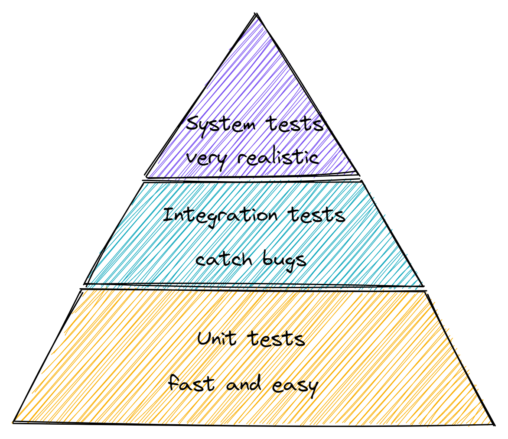

Once Again About the Testing
Effective software testing should minimize the amount of defects and maximize stability of the product. Achieving it in practice can be quite effortful. What to test? How many test cases? Who should test?
Questions what to test and on which level can be answered by testing pyramid. 
1. Unit testing
Unit testing is a type of testing where system under test is an individual unit and is done during the coding phase. A unit may be an individual method, module or object.
Advantages:
- Speed: unit tests are fast (one usually takes several milliseconds)
- Control: unit test are easy to control by providing different inputs and asserting output
- Relatively easy to write: usually additional set up is not required. Exceptions may be the use of frameworks.
Disadvantages:
- Disconnection with reality: unit tests do not fully represent the real execution
- Many bugs can not be caught in unit tests, only on higher testing levels
2. Integration testing
Integration testing is the test level used to test the integration between the code and external parties (very often database).
- The main advantages of an integration test is the ability to catch more bugs and if necessary debug the application to identify the problem.
- The main disadvantage is that this type of tests is more difficult to write.
3. System testing
System Testing is testing the system as a whole. This type of test checks if given input X, the system will provide output Y.
Advantages:
- Very realistic
Disadvantages:
- Slow
- Harder to write
- Flaky
What to test on different levels?
That can depend on many peculiarities of the software system. Guides that works for me:
- all business logic should be covered by unit tests - no exceptions
- part that are using database should be covered by integration tests
- at least one system test should be present to check that system is working
Additional sources: